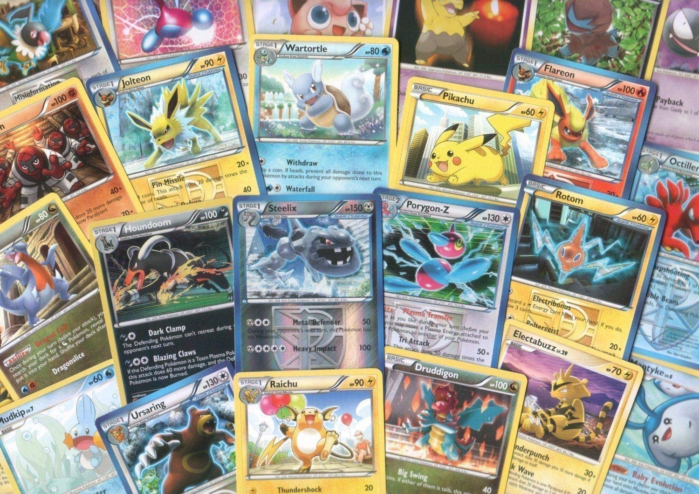

O que é Pokémon TCG?
O Pokémon TCG (Trading Card Game) é um jogo onde cada um dos jogadores usam um baralho (deck) com 60 cartas (cards) para batalhar e ver quem é o vencedor, seguindo determinadas regras. O foco do combate são os Pokémon, representados por diversos cards. Para ajudá-los na batalha contra o oponente, há também cards de itens, estádios, apoiadores (treinadores) e energias. Todos os cards são ilustrados, contando com a contribuição de diversos artistas. Apesar do foco do TCG ser centrado no jogo, há quem colecione os cards simplesmente por suas ilustrações.
O Pokémon TCG tem um conjunto de regras próprias que o diferencia de outros TCGs, e as ideias e temas abordados em suas expansões costumam seguir o rumo dos jogos. Porém, o TCG possui mecânicas próprias, inclusive introduzindo conceitos que não figuram nos jogos, como Poké-Power, Poké-Body, Pokémon EX, Pokémon GX e muitos outros. O Pokémon TCG conta com mais de 70 expansões, divididas ao longo de 10 séries que seguem as gerações dos jogos.
A série Original corresponde à primeira geração e as séries Neo e E-card são referentes à segunda geração. A terceira geração dos jogos tem seu equivalente na série EX; e a quarta geração se estende pelas séries Diamond & Pearl, Platinum e HeartGold & SoulSilver. A série Black & White corresponde à quinta geração; a série XY é referente à sexta geração; e a série Sun & Moon equivale à sétima geração dos jogos de Pokémon. A evolução de Pokémon se reflete em cada expansão e também em cada série: novas mecânicas são introduzidas e até mesmo o design dos cards é alterado conforme as gerações.
O TCG foi criado no Japão pela Media Factory em 1996, sendo primeiro jogo de cartas de Pokémon. Outros cards de Pokémon já tinham sido lançados, mas apenas para coleção. Em 1999, a Wizards of the Coast (o mesmo grupo responsável por Magic: The Gathering) lançou o Pokémon TCG na América do Norte e também no Ocidente. Em 2003, a licença do TCG foi transferida para a Pokémon Company International.
No Brasil, o TCG foi distribuído pela Devir Livraria, que deteve os direitos do jogo até 2010. A partir daí, a Copag comprou a licença do Pokémon TCG e assumiu o papel de distribuição e divulgação do jogo. A Copag fez grandes contribuições ao Pokémon TCG aqui no Brasil, incentivando novos jogadores com promoções, torneios e preços mais acessíveis.
Por falar em torneio, os cards em língua portuguesa são considerados válidos em competições organizadas pela Play! Pokémon, e jogadores brasileiros se destacam no cenário competitivo regional e internacional.